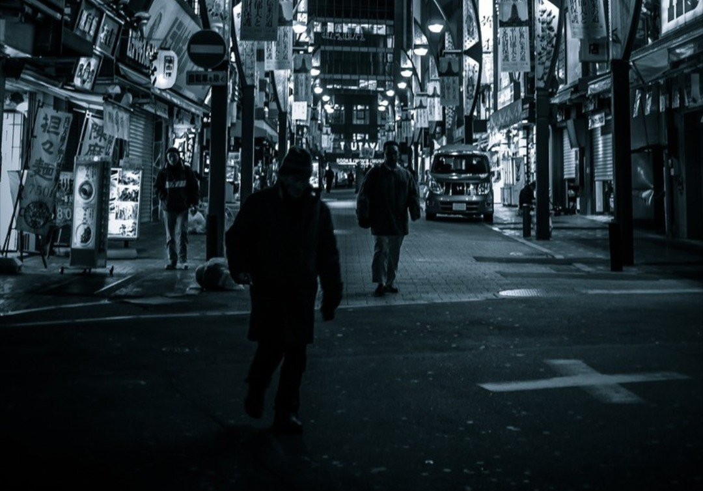

それはいつもの雑踏だった。
僕はマスクをして顔を隠しているけれど、全てを見破っているかのようにそいつは全速力で追いかけてくる。
これから何処に向かうのだろう。
そう誰かに問いかけたところで、返事が返ってくることはない。
遂に僕はそいつに捕まってしまった。
前を見ずにひたすら走っていたから思わず地下鉄のホームから落ちそうになったが、そいつがそれを阻止した。
何もかも諦めてそいつと目を合わせると、目を赤く腫らして口をパクパクさせていた。どうやら声が出ないようだ。時折脚に手を当てていた。
「痛いの？」
そいつは走るジェスチャーをした。どうやら久しぶりに走ったせいで脚を痛めたようだ。
僕らは地下鉄から出て、夜の繁華街を抜け、静かな公園のベンチに腰を掛けた。
そいつにたくさん訊きたいことがあったが話が出来ない様子なので、近くの自販機で缶コーヒーを買って手渡した。そうしたら、そいつは軽い会釈をして慣れた手つきで缶を開けた。
冬の夜の空気は澄んでいるが、それが余計に僕らの空気を不思議なものにした。
何で僕は知らないやつに追いかけられ、結局二人で缶コーヒーなんか飲んでいるのか。そいつはうつむいたまま、時間の流れから逸脱したみたいにちびちびと缶コーヒーを飲んでいた。
僕は少しずつイライラし始めた。そう、なぜなら全てが時間の無駄だからだ！
「あの、ちょっと……先帰るから、あんたも気をつけて帰りなよ……」
どんな言葉遣いで話をしていいのか分からず、まるで子どもにどう接したらいいか分からない大人のような口振りでそう告げると、僕は立ち上がった。
そいつはうつむいたままで、ただひたすら缶コーヒーに口をつけていた。
翌朝、目を覚ますとまた雑踏の中にいた。
あれ？ 昨日、どうやって家に帰ったっけ？
記憶が曖昧なまま、人混みに流されるように地下鉄に吸い込まれる。
その時、誰かの視線を感じた。その方向を見ると、やっぱりそいつがいた。
もう逃げても仕方ないと思い、そいつの方に向かっていった。
そいつはぎこちない笑顔をして、こちらを見ている。
「昨日は缶コーヒーをありがとう」
「あんた、喋れるじゃないか」
「昨日は喋れなかったんだ。今日はどうしてもお礼を言いたくて」
「そんなことはどうでもいいんだ。昨日は何で追いかけてきたの？」
そいつは少し居心地の悪い表情をした。
「昨日は昨日の人間だし、今日は今日の人間なんだ」
「どういうこと？」
「昨日君を追いかけた理由なんか、今日を生きていれば関係ないことさ」
「随分あんたは身勝手なんだな。そういうのは屁理屈って言うんだよ」
「誰が何と言おうといい。君は今日を生きねばならない。昨日を振り返ってはいけないし、もちろん明日に希望を持っても駄目なんだ」
「そんなことを言うために追いかけたのか？」
「ところで、君は知ってるはずだよ」
唐突にそいつは自分自身を指差した。
「あんたを？ 知らないね、絶対に」
「そうか、それならいつか思い出すよ、きっと。ずっと見てきたんだから。そして、これからも君は忘れることはできない」
その瞬間、そいつは地下鉄のホームから身を投げた。それは一瞬の出来事だった。
目の前で何が起こっているのか、理解できなかった。いや、分かろうとしたくなかった。でも、僕はそいつともう少し話をしていたいと思った。
翌朝目を覚ますと、そいつが存在しない世界の雑踏に立っていた。
いつものように地下鉄へと向かう階段を下り、ホームで電車を待った。
あれ？ 昨日、誰かとここで話していたような……。いや、きっと気のせいだろう。
毎日が繰り返される中で、僕は知らないたくさんの誰かとすれ違い、同じ空気を吸っている。
これから何処に向かうのだろう。
そんなことを問いかけても、誰も返事などしてはくれない。